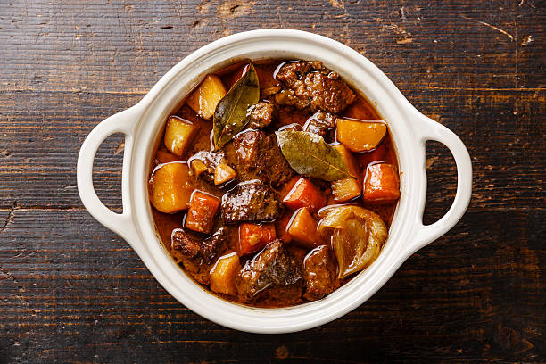

Beef Stew

Description
Ultimate cold weather food! Chunks of well-marbled beef are seared in a hot pan, then gently braised with garlic and onions in a rich wine-based broth
After a few hours in the oven, the meat becomes meltingly tender and enveloped in a deeply flavourful sauce
Ingredients
- 3 pounds of boneless beef chuck
- 2 teaspoons salt
- 1 tsp freshly ground black pepper
- 3 tbsp olive oil
- 2 medium yellow onions
- 7 cloves garllic
- 2 cups beef broth
- 1.5 tbsp tomato paste
- 2 cups dry red wine
- 4 large carrots
- 1 pound of boiled white potatoes
Steps
- Preheat oven to 325F
- Pat beef dry and season with salt and pepper. Brown the meat and transfer to large plate
- Cook onion and garlic for 5 minutes, stirring occasionally
- Add tomato paste and cook one more minute
- Add the beef,scook for 5 minutes
- Add beef broth and wine, cover pot with lid and braise for 2 hours
- Add carrots and potatoes, put back in oven for 1 hour and done